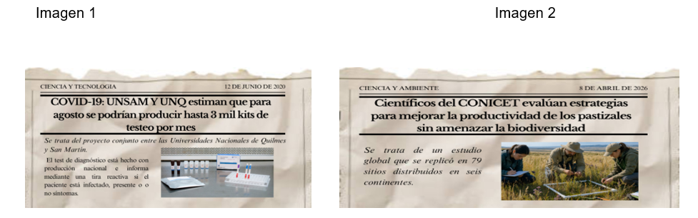

Objetivos de enseñanza
- Presentar la Universidad Nacional de Quilmes y su propuesta de formación bajo entornos virtuales.
- Introducir a la educación superior como derecho y bien público.
- Promover la comprensión del rol del estudiante en entornos virtuales.
Objetivos de aprendizaje
Se espera que los y las estudiantes puedan:
- Comprender la educación superior como un derecho garantizado socialmente y como bien público.
- Reconocer las características de la formación bajo entornos virtuales.
- Identificar su rol como estudiantes en la universidad.
En esta primera clase abordaremos el sentido de la universidad como institución social, su carácter de derecho y el lugar que ocupa en el contexto actual. Asimismo, comenzaremos a pensar qué implica ser estudiante en la modalidad virtual.
Bibliografía de lectura obligatoria
Material Didactico Digital (MDM) (2026).
Ingresar a la universidad pública
El Curso Inicial de Socialización constituye tu primer espacio de encuentro con la universidad. Este inicio no implica únicamente comenzar una carrera, sino también incorporarte a una institución con características propias, en la que se organizan de manera particular la enseñanza, el conocimiento y la vida académica.
Estás ingresando a la Universidad Nacional de Quilmes (UNQ), una universidad pública ubicada en el conurbano bonaerense que, a través de su modalidad virtual, amplía sus alcances y posibilita el acceso a estudiantes de distintas regiones del país. Esto es de gran importancia, ya que forma parte de un proyecto institucional que busca democratizar el conocimiento y reconocer la diversidad de trayectorias de quienes la habitan.
Ingresar a la universidad es, al mismo tiempo, una experiencia individual y colectiva. Es una oportunidad para formarse, pero también para comprender el mundo que nos rodea, participar en una comunidad y construir un recorrido propio.
La universidad como derecho y bien público
En Argentina, la educación superior es concebida como un bien público social y un derecho humano. Esto significa que no se trata de un servicio ni de un privilegio individual, sino de una responsabilidad del Estado y de las universidades de generar condiciones para que las personas puedan acceder, sostener sus estudios y graduarse.
Sin embargo, esta concepción no ha sido siempre igual ni se presenta hoy como un consenso incuestionado. En el escenario actual, la educación como derecho vuelve a colocarse en el centro del debate público, particularmente en relación con el rol del Estado en su garantía. En muchos casos, estas discusiones se sostienen desde perspectivas que no solo interpelan el financiamiento del sistema universitario, sino que también pueden poner en tensión la autonomía de las universidades. Lo que hoy se expresa como un debate sobre recursos también abre interrogantes más profundos: quiénes acceden a la universidad, quiénes logran sostener sus trayectorias y quiénes finalmente egresan.
En este sentido, es importante reconocer que el ingreso a la universidad no depende únicamente de decisiones individuales. Forma parte de procesos sociales más amplios, vinculados con políticas públicas que han ampliado el sistema universitario, diversificado las propuestas de formación y desarrollado modalidades que permiten que la universidad esté presente donde antes no llegaba.
Una forma sencilla de comenzar a pensar esto es mirar nuestra propia historia: ¿cuántas personas de tu familia accedieron a estudios universitarios? Para muchos y muchas de ustedes, este puede ser el primer acercamiento a la universidad. Ese hecho, lejos de ser solo individual, también expresa transformaciones en el sistema educativo y en la sociedad.
La universidad pública no se reduce a una oferta de carreras: es una institución social que amplía derechos, democratiza el acceso al conocimiento y acompaña trayectorias diversas.
La función social de la universidad: ciencia y territorio
Comprender la universidad implica también reconocer que su función no se limita a la formación profesional. Las universidades producen conocimiento, investigan, intervienen en problemáticas sociales y contribuyen a la construcción de sociedades más justas.
Tal como plantea la Declaración de la Conferencia Regional de Educación Superior, la universidad no solo forma profesionales, sino que también debe contribuir a la convivencia democrática, promover la cooperación social y participar en la transformación de la realidad.
Este compromiso se ha hecho visible en distintos momentos, como durante la pandemia, cuando muchas universidades participaron activamente en el desarrollo de conocimiento aplicado, brindaron apoyo técnico y colaboraron en instancias de detección del COVID-19, mostrando su capacidad de dar respuesta frente a situaciones críticas.

Las experiencias de articulación entre universidad, sistema científico y territorio permiten comprender que la formación universitaria no se agota en la preparación para el mercado laboral: también supone la formación de ciudadanos y ciudadanas comprometidos con el bienestar colectivo.
En este sentido, resulta importante destacar el papel del CONICET (Consejo Nacional de Investigaciones Científicas y Técnicas), principal organismo público de promoción de la ciencia y la tecnología en Argentina, ya que su trabajo se desarrolla en estrecha articulación con las universidades nacionales. A través de sus equipos de investigación, contribuye a la generación de conocimiento con anclaje local y proyección social.
Al mismo tiempo, este escenario plantea desafíos para las universidades. En un contexto en el que cada vez más estudiantes acceden a la educación superior con trayectorias diversas, atravesadas por expectativas, incertidumbres y el deseo de construir un futuro con mayores oportunidades, sostener la enseñanza, acompañar esas trayectorias y, al mismo tiempo, responder a demandas sociales más amplias, forma parte de las tensiones propias del sistema universitario actual.
Las universidades hoy
Las universidades no se encuentran aisladas del contexto actual. Por el contrario, forman parte de procesos sociales, económicos, culturales y tecnológicos más amplios.
En la actualidad, por ejemplo, circulan discursos que cuestionan el sentido de estudiar, señalando que las tecnologías digitales, como la inteligencia artificial, podrían reemplazar ciertas tareas humanas. Frente a estas afirmaciones, resulta necesario comprender que se trata de transformaciones que atraviesan a la sociedad en su conjunto, y que también interpelan a las instituciones educativas.
En este marco, la educación superior adquiere un papel central. En sociedades cada vez más atravesadas por el conocimiento, la ciencia y la tecnología, su desarrollo y fortalecimiento resultan fundamentales para el progreso social, la generación de riqueza, la construcción de identidades culturales, la reducción de desigualdades y la promoción de sociedades más justas.
Estudiar en la modalidad virtual
La modalidad virtual constituye una de las características distintivas de la Universidad Nacional de Quilmes. Esta propuesta no surge únicamente como una alternativa tecnológica, sino como una política orientada a ampliar el acceso y reconocer la diversidad de situaciones de quienes estudian.
Estudiar en esta modalidad implica organizar el tiempo de manera autónoma, sostener una participación activa en el aula virtual y desarrollar formas de comunicación mediadas por las tecnologías. A diferencia de la presencialidad, donde los tiempos suelen estar más estructurados, aquí cada estudiante es quien debe planificar su recorrido y tomar decisiones sobre su formación.
Esto no significa estudiar en soledad. Por el contrario, implica integrarse a una comunidad en la que docentes, tutores y estudiantes construyen espacios de intercambio, acompañamiento y aprendizaje.
- Organización autónoma del tiempo.
- Participación activa en el aula virtual.
- Comunicación mediada por tecnologías.
- Integración a una comunidad de aprendizaje.
Ser estudiante en la universidad
Finalmente, es importante señalar que ser estudiante universitario no se reduce a cumplir con plazos o manejar herramientas tecnológicas. Implica un proceso que lleva tiempo y requiere adaptación, en el que se van construyendo de manera progresiva nuevas formas de estudiar y participar en la vida académica.
Este recorrido también supone apropiarse de modos específicos de producir conocimiento, propios del ámbito universitario, que no siempre son inmediatos ni evidentes, sino que se desarrollan con la práctica, la reflexión y el acompañamiento.
Hoy no solo iniciás una carrera: comenzás a formar parte de una comunidad universitaria. Esto implica involucrarte, participar y construir este espacio junto a otros y otras, desde el respeto y el compromiso. La universidad es también un lugar que podés hacer propio.
Actividad 1 · Presentación en el foro
Reconocernos como parte de un grupo diverso, con historias, recorridos y expectativas diferentes, pero que comparten el acceso a la educación superior como un derecho.
Tal como se desarrolló en el primer eje de la clase, ingresar a la Universidad Nacional de Quilmes (UNQ) no es solo una decisión individual, sino también la expresión de un derecho humano y social. La universidad, desde su creación, se propone ampliar el acceso al conocimiento y reconocer la diversidad de trayectorias de quienes la habitan.
En este primer foro los invitamos a presentarte y a comenzar a construir este espacio compartido con tus compañeros/as y docentes. Para ello, podés incluir en tu intervención algunos aspectos que nos permitan conocerte.
- Contanos quién sos, de dónde sos y qué carrera elegiste.
- Compartí cómo fue tu recorrido hasta llegar a la universidad.
- Comentá qué significa este ingreso para tu proceso de formación.
- Explicá por qué elegiste la modalidad virtual y cómo se articula con otras dimensiones de tu vida.
Funciones y recursos del campus virtual como entorno institucional de aprendizaje
El Campus Virtual de la UNQ constituye el entorno central donde se desarrolla la propuesta educativa en modalidad virtual, basada en un modelo de formación integrador que utiliza las Tecnologías de la Información y la Comunicación (TIC) para facilitar el acceso al conocimiento. A través de la plataforma Moodle se organizan las actividades de enseñanza y aprendizaje, promoviendo la interacción entre estudiantes, docentes, tutores y el conjunto de la comunidad académica.
Es fundamental para el correcto desempeño académico poder acceder al campus periódicamente. En el Campus se accede a las aulas virtuales de cada asignatura, donde se encuentran los contenidos, actividades y espacios de intercambio. La cursada se organiza de manera asincrónica, lo que permite administrar los tiempos de estudio con flexibilidad y autonomía.
Además, el entorno ofrece un repositorio de materiales didácticos que centraliza la bibliografía de las materias y facilita su búsqueda y descarga. El acompañamiento institucional se realiza a través de las Salas de Tutorías, donde un/a tutor/a académico/a orienta en la organización de la trayectoria, la elección de materias y el uso del campus, además de brindar información relevante sobre la vida universitaria. A su vez, el Sistema de Autogestión Guaraní permite realizar inscripciones, consultar la historia académica y gestionar trámites administrativos.
Estrategias de organización del estudio en entornos virtuales de educación
La organización del tiempo constituye un aspecto central en el desempeño del rol del estudiante en entornos virtuales, ya que se trata de un recurso limitado que debe ser administrado de manera eficiente para sostener una trayectoria académica productiva. En este sentido, el aprendizaje implica no solo la apropiación de contenidos, sino también el desarrollo de estrategias personales de planificación del tiempo.
Asimismo, la optimización del tiempo de estudio requiere la incorporación de hábitos y prácticas como la definición de prioridades, el uso de cronogramas y el diseño de estrategias personales que apunten a fortalecer el cumplimiento de objetivos académicos.
Aprender en la virtualidad supone también aprender a organizarse: administrar tiempos, priorizar tareas y construir hábitos de estudio forma parte de la experiencia universitaria.
Comunicación académica en espacios institucionales virtuales desde una perspectiva de convivencia y respeto de derechos
La comunicación en la UNQ Virtual es un componente fundamental del proceso educativo, ya que se basa en la interacción entre estudiantes, docentes, tutores y otros actores institucionales en el marco del diálogo didáctico mediado propio de la educación a distancia. Este intercambio permite sostener el aprendizaje en entornos virtuales y construir una experiencia formativa compartida.
Como en toda institución, la comunicación debe adecuarse a determinadas normas preestablecidas que promueven un uso responsable de los espacios de comunicación. Estas interacciones se desarrollan sobre la base del respeto por la diversidad de opiniones, la libertad de expresión y los valores de la educación pública, como la democracia y los derechos humanos.
Conclusión
Esta primera clase permitió reconocer que la Universidad Nacional de Quilmes no es solo un espacio de formación, sino una institución que garantiza el derecho a la educación superior. Ingresar a la universidad pública implica comprender que el conocimiento es un bien público, atravesado por debates y desafíos actuales.
Estudiar en la modalidad virtual supone construir progresivamente el oficio de estudiante, organizar el propio recorrido y participar en una comunidad que produce conocimiento.
Asimismo, se presentó el modelo pedagógico en el cual se enmarca la UNQ Virtual, indicando los principales actores y herramientas del Campus Moodle involucrados en el proceso educativo. También se mostraron los diferentes modos de comunicación que pueden existir en el Campus Virtual y específicamente dentro del aula.
Esperamos que los temas abordados en esta primera clase les permitan integrarse a nuestra comunidad universitaria. Les damos la bienvenida a la Universidad Nacional de Quilmes y les deseamos un excelente inicio.
Actividades de resolución obligatoria
- Conocer las herramientas del campus virtual desde la edición del perfil personal.
- Participar en un foro de tipo social.
1. Perfil del Campus
Deberá completar el perfil y subir su foto personal al Campus. De este modo, toda la comunidad universitaria tendrá posibilidad de conocerlo si alguien pulsa su nombre en la lista de participantes.
Para realizar la tarea deberá posicionarse sobre el círculo que contendría la foto de perfil. Puede acceder a la misma desde el inicio del campus o bien ubicarla en la parte superior de la pantalla al lado del botón “Ayuda”. Al presionar se habilitará un menú general y para resolver la actividad deberá ingresar en la opción “Mi cuenta”, donde podrá editar su foto y descripción accediendo al ítem “Editar mi cuenta”.
- Subir una fotografía personal en primer plano.
- Completar el espacio de descripción con una presentación amable y abierta.
Aclaración: no es obligatorio publicar el Curriculum Vitae dentro del espacio Información, completar “Mis perfiles académicos” ni “Redes Sociales”.
2. Presentación en el foro
Deben participar en el Foro “Me presento” que se encuentra en el bloque central del aula bajo el título Actividades. En el foro encontrarán la consigna guía con la indicación de uso de hilo de discusión y formas de intervención.
Actividades de autodiagnóstico
A continuación, se proponen una serie de actividades de resolución individual. No tienen devolución ni corrección por parte del/de la docente porque son totalmente de exploración y navegación, pero son altamente recomendadas para familiarizarse con espacios centrales del campus y con las primeras acciones de un estudiante virtual.
- Ubique la sala de Tutorías, visite sus instructivos, avisos del/de la tutor/a y lista de participantes.
- Ubique Autogestión Guaraní y allí: Inscripción a Materias, Inscripción a Finales y Trámites.
Ubique el espacio de Correo Electrónico. Vea las opciones que ofrece: dirección, asunto/título y cuerpo del mensaje. Redacte un correo para su tutor/a comentando que está probando dicho recurso y que intenta comenzar a conocer una de las formas de comunicarse.
La tarea propuesta tiene como objetivo acercarlos al repositorio de materiales didácticos, espacio donde encontrarán toda la bibliografía digitalizada propuesta por los docentes. Deberán buscar algún libro o capítulo relacionado con su carrera, utilizando todos los filtros posibles y realizando diversos intentos.
Argentina.gob.ar. (2020, 12 de junio). COVID-19: UNSAM y UNQ estiman que para agosto se podrían producir hasta 3 mil kits de testeo por mes [Imagen 1].
Conferencia Regional de Educación Superior en América Latina y el Caribe (CRES). (2018). Declaración de la Conferencia Regional de Educación Superior en América Latina y el Caribe. Córdoba, Argentina.
CONICET. (s.f.). Científicos del CONICET evalúan estrategias para mejorar la productividad de los pastizales sin amenazar la biodiversidad [Imagen 2].
Estas referencias acompañan los materiales y ejemplos trabajados en la clase.